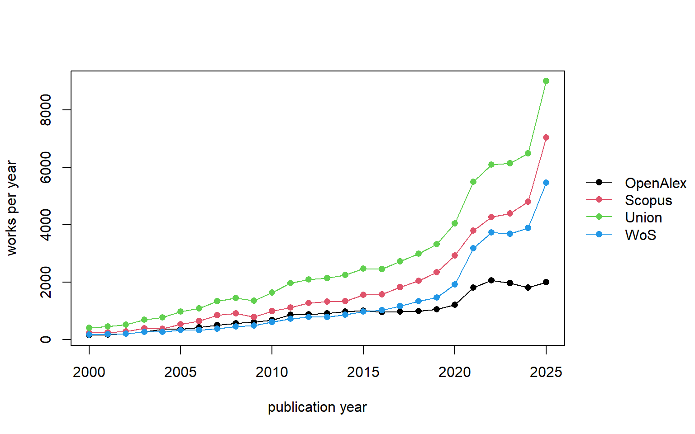
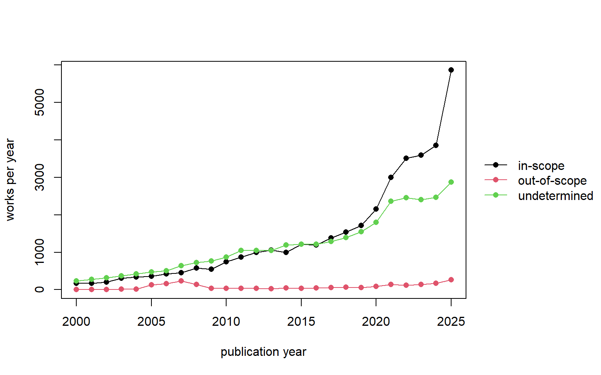

The corpus is built by the pipeline in Scripts/ (collection → assemble/1-spine.py → assemble/2-abstracts.py → derive/variables.py), which writes the analysis dataset data/final/corpus_derived.parquet. Every table and figure in this notebook is computed from that corpus_derived dataset, imported via the R arrow package.
R session setup
library(arrow)library(dplyr)library(tidyr)library(purrr)library(tinytable)library(glue)library(tinyplot)# Uniform table style for every tt(): content rows at 0.9, headers at 0.95 bold,# everything left-aligned, columns sized to content. Applies to HTML and Typst alike.options(tinytable_tt_theme =function(x) { x |>theme_tinytable() |># keep the default top/header/bottom rulesstyle_tt(align ="l") |>style_tt(fontsize =0.9) |>style_tt(i =0, fontsize =0.95, bold =TRUE)})cd <-read_parquet("data/final/corpus_derived.parquet",col_select =c("in_OpenAlex", "in_WoS", "in_Scopus", "in_OA_db", "in_scopus_db", "in_wos_db","reverse_doctype", "in_analysis_window", "year_resolved", "doi", "trust_scope","trust_sense", "sense_basis", "scope_conflict", "title","abstract", "abstract_open_available", "curated_backfill", "type", "oa_source_type","OA_abstract", "OA_keywords", "Scopus_Abstract", "Scopus_Author Keywords","Scopus_Index Keywords", "WoS_Abstract", "WoS_Author Keywords", "WoS_Keywords Plus"))nz <-function(x) !is.na(x) & x !=""# Append a "Total" row summing the numeric columns. Used only for partition tables# (mutually exclusive rows), where the column totals are meaningful.add_total_row <-function(df, label ="Total") { df |>bind_rows( df |>summarise(across(where(is.numeric), sum)) |>mutate("{names(df)[1]}":= label) )}region_of <-function(oa, sc, wo) { parts <-c("OpenAlex", "Scopus", "WoS")[c(oa, sc, wo)]if (length(parts) ==1) paste("only", parts)elseif (length(parts) ==3) "all three"elsepaste(parts, collapse ="+")}aw <- cd |>filter(in_analysis_window) |>mutate(region =pmap_chr(list(in_OpenAlex, in_Scopus, in_WoS), region_of))
3.1 What the 2015 audit established
Before this corpus was assembled, a focused audit on a single complete year (2015) tested the design across the three databases. It is not re-run here – it is preserved, runnable, in Scripts/2015-audit/ – but it settled four things that motivated the collection approach, all of which the full corpus below then confirms at scale:
Coverage is near-total. OpenAlex contained essentially all (98.9–100%) of the trust research the curated Scopus and Web of Science searches returned, so OpenAlex can serve as the discovery substrate and citation backbone.
No single query retrieves it all. The OpenAlex topic-union retrieved under a tenth of the curated trust OpenAlex itself contains, and Web of Science was largely a subset of Scopus – because trust is studied inside hundreds of substantive topics, not in one.
The databases are complementary. Each channel held in-scope works the others missed, so recall has to come from merging all three by DOI, with precision imposed afterwards by the classifier and the screen.
The only-OpenAlex works are mostly recoverable. About two-thirds of the works only OpenAlex returned existed in a curated database after all – missed by the keyword query, not absent from the database – which is what later makes the curated by-DOI backfill (section 1.5) worthwhile.
This notebook applies the same three searches (Notebook 2, section 1.4) to the whole period and reports the result not as a test but as the assembled corpus the rest of the project works from. To resolve publication-year boundary mismatches across databases, the pull spans 1999–2026; 1999 and 2026 are buffer years, and the analysis window is 2000–2025 (a work enters the window if any source dates it inside it). Of 75,302 unique works in the full pull, 71,108 fall in the analysis window; the rest are dated only to a buffer year in every source.
Two terms recur throughout, with the same meaning as in the databases notebook (section 1.5). The OpenAlex pull is the set of works the twelve-topic search returned; the OpenAlex database is what OpenAlex holds regardless of any query. The same split applies to the curated side – the curated searches (the Scopus and Web of Science keyword queries) versus the curated databases (those two indexes in full). ‘Recoverable’ therefore means present in a curated database but not returned by the curated searches, and a work can sit in the OpenAlex-pull-only region yet still exist in a curated database – a distinction that matters directly for the abstract gap (section 3.10).
3.2 The collection
Each search is deduplicated within its own source before any comparison.
Table 3.1: Works returned by each search, 2000–2025 analysis window (deduplicated within each source).
Database
Records
Scopus
48,626
Web of Science
35,444
OpenAlex pull (topic-union)
23,807
Scopus is the broadest keyword search, Web of Science the more selective, and the OpenAlex twelve-topic union – which captures the trust-defining core rather than trust-as-studied-everywhere – the smallest.
3.3 Coverage: does the OpenAlex database contain the curated records?
For every Scopus and Web of Science record with a DOI, the by-DOI crosswalk asks whether that DOI exists anywhere in the OpenAlex database – a query-independent check, read offline from the topic pull plus the crosswalk.
Table 3.2: Presence of each curated record in the OpenAlex database, full corpus.
Source
DOI'd records
In OpenAlex
In OpenAlex %
Genuinely absent
Absent %
No-DOI
Scopus
45,898
45,179
98.4
719
1.6
2,728
Web of Science
34,326
34,007
99.1
319
0.9
1,118
The single-year result holds across the quarter-century: genuine absence is 1.6% of DOI’d Scopus records and 0.9% of Web of Science (an upper bound – a few malformed DOIs fail to resolve). The OpenAlex database contains essentially all the trust research the curated searches return, so it can serve as the discovery substrate and citation backbone, with curated records recoverable by DOI.
3.4 Overlap and uniqueness
Coverage is near-total, but the retrieved sets overlap modestly.
Code
pc <-function(x, y) as.character(glue("{format(sum(x & y), big.mark = ',')} ({round(100 * sum(x & y) / sum(y), 1)}%)"))tibble(Comparison =c("Scopus found in OpenAlex", "WoS found in OpenAlex","WoS found in Scopus", "Scopus found in WoS"),Overlap =c(pc(aw$in_OpenAlex, aw$in_Scopus), pc(aw$in_OpenAlex, aw$in_WoS),pc(aw$in_WoS & aw$in_Scopus, aw$in_WoS), pc(aw$in_WoS & aw$in_Scopus, aw$in_Scopus))) |>tt()
Table 3.3: Pairwise retrieval overlap across the window corpus.
Comparison
Overlap
Scopus found in OpenAlex
5,480 (11.3%)
WoS found in OpenAlex
4,687 (13.2%)
WoS found in Scopus
30,843 (87%)
Scopus found in WoS
30,843 (63.4%)
The OpenAlex pull retrieves about 11–13% of the curated trust the database overwhelmingly contains, and Web of Science is largely a subset of Scopus (87%) – both curated searches run the same precise query, while the OpenAlex pull draws a different boundary. Why each search returns less than its database holds was settled at the single year (section 3.1) and is consistent with the corpus: the dominant filter is substantive – trust is scattered across topics outside the twelve-topic net – with document-type exclusions accounting for much of the reverse gap.
3.5 The Venn regions: does OpenAlex’s classifier add value?
Each work sits in one of seven Venn regions and is triaged by the trust-sense classifier (Notebook 2) into in-scope, out-of-scope or undetermined.
Table 3.4: The window corpus by Venn region and trust_scope.
region
n
in-scope
out-of-scope
undetermined
only OpenAlex
17,881
4,919
197
12,765
only Scopus
16,544
8,756
1,048
6,740
only WoS
4,155
2,574
126
1,455
OpenAlex+Scopus
1,239
915
20
304
OpenAlex+WoS
446
335
4
107
Scopus+WoS
26,602
16,785
734
9,083
all three
4,241
3,499
31
711
Total
71,108
37,783
2,160
31,165
The added-value finding replicates with force. OpenAlex’s topic search found 17,881 trust works that both curated keyword searches missed; just 1.1% are out-of-scope, 27% are in-scope, and the rest await the content screen. The conclusion is bidirectional – the only-Scopus region holds 8,756 in-scope works the other two searches miss, the only-WoS region 2,574 – so no single channel is sufficient; the curated keyword searches contribute the largest blocks of uniquely-relevant recall, and works found in all three are the most clearly in-scope (83%).
3.6 The only-OpenAlex region: recoverable or genuinely unique?
The Venn table shows OpenAlex’s topic search surfaced 17,881 works the curated searches missed, but not whether those works are genuinely outside the subscription databases or merely missed by the curated queries. A reverse check settles it, exactly as at the single year (section 3.1): for every only-OpenAlex work with a DOI, the live Scopus and Web of Science APIs were asked whether the DOI exists in their database at all (Scripts/collect/reverse-check.py), capturing the curated document type where it does.
Code
oo <- aw |>filter(in_OpenAlex &!in_WoS &!in_Scopus)ood <- oo |>filter(nz(doi))either <-sum(ood$in_scopus_db %in%TRUE| ood$in_wos_db %in%TRUE)tibble(`Of the only-OpenAlex works`=c("with a DOI, in Scopus", "with a DOI, in Web of Science","with a DOI, in either curated database (recoverable)","with a DOI, in neither (genuinely OpenAlex-unique)", "no DOI (unverifiable)"),n =c(sum(ood$in_scopus_db %in%TRUE), sum(ood$in_wos_db %in%TRUE), either,nrow(ood) - either, nrow(oo) -nrow(ood))) |>tt() |>format_tt(j ="n", digits =0, num_mark_big =",")
Table 3.5: The only-OpenAlex region split by the reverse check against the curated databases.
Of the only-OpenAlex works
n
with a DOI, in Scopus
9,459
with a DOI, in Web of Science
7,239
with a DOI, in either curated database (recoverable)
9,946
with a DOI, in neither (genuinely OpenAlex-unique)
Curated document type of the recoverable only-OpenAlex works (top
genres).
curated document type
n
Article
7,288
Book Chapter
616
Conference Paper
505
Review
366
Editorial material
333
Meeting
290
Abstract
176
Article; Meeting
94
The single-year pattern holds at scale. Of the only-OpenAlex works with a DOI, 9,946 (64%) are recoverable – they exist in Scopus or Web of Science, the curated queries simply did not return them – and only 5,672 (36%) are genuinely outside both subscription databases, OpenAlex’s true unique contribution. The recoverable works’ curated document types are dominated by Article (7,288) and Book Chapter (616) – exactly the types the curated query accepts, so these are genuine in-scope articles the keyword or field match failed to return – with the genres the query excludes by document type (Conference Paper 505, Review 366, Editorial 333, Meeting 290) a substantial but minority share that OpenAlex admits under its coarse “article” type. These 9,946 recoverable works are precisely what the curated by-DOI backfill (section 1.5) then enriches with curated abstracts and keywords; what that recovers is reported in section 3.10.
3.7 Where the trust signal sits in each database
A question that bridges to whatever screens the corpus next: in which field of each database’s record does the trust term actually appear? The classifier and any abstract-level screen can read a match in the title or abstract directly; a match only in the keyword fields – Web of Science’s cited-reference-derived Keywords Plus above all (Notebook 1) – is findable but needs the keyword fields read; and a work a search returned on a trust term now absent from its held title, abstract and keywords is the abstract-withdrawal tail made visible. The table scans each returned record’s held fields for the trust word family (computed inline, not stored in the dataset; it approximates the finer categories of the single-year audit).
Table 3.6: Where the trust term sits in each source’s held record (works that source returned).
Source
returned
title / abstract
keywords only
elsewhere / withheld
OpenAlex pull
23,807
21,432
184
2,191
Scopus
48,626
46,330
578
1,718
Web of Science
35,444
33,428
1,018
998
For most records the trust signal is in the title or abstract, where any screen can read it. The exceptions are instructive. Web of Science carries the most keyword-only matches (1,018) – its Keywords Plus, generated from the titles of a work’s cited references, retrieves studies that engage the trust literature heavily without naming trust in their own text. OpenAlex shows the largest “elsewhere/withheld” tail (2,191): works its topic search returned on a trust term that is no longer present in the held title, abstract or keywords – the abstract drought (Notebook 1) made visible, since the search index remembered a match the record no longer exposes. Both are arguments for retaining the curated keyword fields and for the abstract backfill: the trust signal is not always where a naive title-and-abstract screen would look.
3.8 How trust research has grown, 2000–2025
The corpus shows what a single year cannot: the trajectory of the field and of each search’s grip on it.
Code
long <- aw |>filter(year_resolved >=2000, year_resolved <=2025) |>summarise(.by = year_resolved,Union =n(), OpenAlex =sum(in_OpenAlex), WoS =sum(in_WoS), Scopus =sum(in_Scopus)) |>arrange(year_resolved) |># .by does not sort; type="o" needs ordered xpivot_longer(-year_resolved, names_to ="series", values_to ="works")tinyplot(works ~ year_resolved | series, data = long, type ="o", pch =16,xlab ="publication year", ylab ="works per year",main ="", legend =list(title =NULL))

Figure 3.1: Trust-research works per year, 2000–2025: the deduplicated union and the share retrieved by each database search. The 2025 figure is inflated by online-first/in-press records and is read as a lower bound on the most recent year.
The same years, split by the trust-sense triage, show how the relevant share has held up as the field grew.
Code
ys <- aw |>filter(year_resolved >=2000, year_resolved <=2025) |>count(year_resolved, trust_scope, name ="works")tinyplot(works ~ year_resolved | trust_scope, data = ys, type ="o", pch =16,xlab ="publication year", ylab ="works per year",main ="", legend =list(title =NULL))

Figure 3.2: Trust-research works per year by trust_scope, 2000–2025: in-scope, undetermined and out-of-scope. The in-scope share holds steady across the period, so the growth is growth in relevant trust research, not in noise.
Three things stand out. The field has grown roughly twentyfold – from about 412 works in 2000 to several thousand a year by the early 2020s. The curated searches scale with that growth while the OpenAlex topic-union flattens (it levels off around 1,000–2,000 works a year and dips in the most recent years), consistent with a fixed twelve-topic net capturing a shrinking fraction of a widening field and with the abstract drought eroding the keyword clause OpenAlex depends on (Notebook 1). The 2025 column is depressed for OpenAlex and inflated for the curated databases by online-first effects at the collection boundary, so the final year is read as provisional. And throughout, the in-scope share holds steady (Figure 3.2): the growth is growth in relevant trust research, not in noise, with out-of-scope work a thin, roughly constant band.
3.9 The trust-sense triage across the corpus
The record-level classifier (Notebook 2) labels every work’s trust_scope and records where the sense came from. Across the window corpus:
Code
scope_tab <- aw |>count(trust_scope, name ="n") |>mutate(`%`=round(100* n /sum(n), 1)) |>add_total_row()scope_tab |>tt() |>format_tt(j ="n", digits =0, num_mark_big =",") |>style_tt(i =nrow(scope_tab), line ="t", bold =TRUE)
Table 3.7: The trust_scope triage over the window corpus, and where each resolved sense came from.
trust_scope
n
%
in-scope
37,783
53.1
out-of-scope
2,160
3.0
undetermined
31,165
43.8
Total
71,108
99.9
Code
basis_tab <- aw |>count(sense_basis, name ="n") |>add_total_row()basis_tab |>tt(caption ="Where each work's combined sense came from (none = undetermined).") |>format_tt(j ="n", digits =0, num_mark_big =",") |>style_tt(i =nrow(basis_tab), line ="t", bold =TRUE)
Where each work's combined sense came from (none = undetermined).
sense_basis
n
both
8,779
keywords
2,135
none
31,165
text
29,029
Total
71,108
The rule places 53.1% of window works in-scope, 3.0% out-of-scope, and leaves 43.8% undetermined for the screen. Reading the keyword fields is not cosmetic: 2,135 works were classified from their keywords alone (their title and abstract said nothing the rule could catch), and a further 8,779 had text and keywords agree; only 213 works carry a scope conflict – a small, explicit review queue rather than a silent guess. The leading in-scope senses are political, institutional and generalised/social trust; the out-of-scope side is dominated by technology and consumer trust, exactly the contamination the triage is meant to hold back. Undetermined is the large residual by design (Notebook 2) – it is the screen’s main queue, not a verdict of irrelevance.
3.10 What is still without an abstract
The classifier and any downstream screen depend on the abstract, so the works that lack one are worth characterising. The curated by-DOI backfill (section 1.5) has already run: of the 9,946 recoverable only-OpenAlex works it recovered curated metadata for, it closed most of the abstract gap, and the residual no-abstract set is now 1,859 works (down from 3,278 before the backfill).
Code
noab <- aw |>filter(!nz(abstract))top_glue <-function(col, k) { noab |>count({{ col }}, name ="n", sort =TRUE) |>slice_head(n = k) |>rename(label =1) |>mutate(txt =glue("{label} {format(n, big.mark = ',')}")) |>pull(txt) |>paste(collapse ="; ")}tibble(characteristic =c("document type (top 2)", "only in the OpenAlex pull (not returned by a curated search)", "OpenAlex venue type (top 3)"),value =c(top_glue(type, 2),format(sum(noab$region =="only OpenAlex"), big.mark =","),top_glue(oa_source_type, 3))) |>tt()
Table 3.8: Characteristics of the works still with no abstract from any source (analysis window).
characteristic
value
document type (top 2)
article 1,143; book chapter 712
only in the OpenAlex pull (not returned by a curated search)
1,802
OpenAlex venue type (top 3)
journal 757; (none) 707; ebook platform 216
The residual is 97% (1,802) pull-only works. Splitting them by the reverse check (Table 3.5) shows what the backfill left behind:
Code
oo_na <- aw |>filter(!nz(abstract), region =="only OpenAlex")ood <- oo_na |>filter(nz(doi))recoverable <-sum(ood$in_scopus_db %in%TRUE| ood$in_wos_db %in%TRUE)recover_tab <-tibble(`Of the residual abstract-less pull-only works`=c("with a DOI, in a curated database (no abstract there either)","with a DOI, in neither (genuinely OpenAlex-unique)","no DOI (unverifiable)"),n =c(recoverable, nrow(ood) - recoverable, nrow(oo_na) -nrow(ood))) |>add_total_row()recover_tab |>tt() |>format_tt(j ="n", digits =0, num_mark_big =",") |>style_tt(i =nrow(recover_tab), line ="t", bold =TRUE)
Table 3.9: The residual abstract-less pull-only works split by the reverse check (after the curated backfill).
Of the residual abstract-less pull-only works
n
with a DOI, in a curated database (no abstract there either)
205
with a DOI, in neither (genuinely OpenAlex-unique)
1,098
no DOI (unverifiable)
499
Total
1,802
Before the backfill, about 1,629 of the abstract-less pull-only works were recoverable; the curated pull supplied an abstract for most of them, leaving just 205 whose curated record carried no abstract either (conference and meeting items, mostly). What remains is overwhelmingly the genuinely OpenAlex-unique tail (1,098, in neither curated database) and the no-DOI tail (499) – works that cluster in book series, sourceless venues and ebook platforms rather than in the reputable journals, exactly where an abstract is least likely to exist anywhere. All are retained and flagged, not dropped; an open-access full-text channel at the META stage is the remaining route to the few that have one.
3.11 The assembled dataset
The pipeline writes the analysis dataset to data/final/corpus_derived.parquet; the assembled base before classification is corpus_raw.parquet (same folder), the intermediate spine and the OpenAlex citation graph live in data/intermediate/, and every column is documented in codebook.html (Notebook 5, generated from the derivation registry). Parquet is the canonical format (read directly by these notebooks via R arrow); a CSV can be produced from any dataset on demand in one line of R or Python (see the RA guide). Of the 71,108 window works, 69,249 (97.4%) carry an abstract – up from 95.4% before the curated backfill – of which 52,353 have an openly-licensed copy available (abstract_open_available, i.e. an OpenAlex abstract exists) and the rest are licensed-only; each abstract is tagged by source, licence and whether it was backfilled, so external-API eligibility and any future redistribution are decided per work rather than by discarding data. The citation graph (2.77M edges) supports the reference miner; it is kept out of the working dataset so the corpus stays lean.
3.12 What the corpus establishes
Coverage holds at scale. The OpenAlex database contains 98.4–99.1% of what the curated searches return across 2000–2025; it serves as the discovery substrate and citation backbone.
Discovery is multi-channel by necessity. The topic-union retrieves about an eighth of the curated trust it contains, and that fraction shrinks over time; recall comes from complementary channels merged by DOI.
The classifier’s value is real and large. The OpenAlex search surfaces 17,881 in-scope-dense, low-noise trust works the keyword searches miss; the curated searches contribute the largest blocks of uniquely-relevant recall. Precision is imposed downstream by the trust-sense triage, the document-type detail, and the content screen.
The curated backfill closed most of the abstract gap. Recovering curated records for the 9,946 recoverable pull-only works lifted abstract coverage to 97.4% and enriched the corpus with curated keywords and document types, leaving a residual of 1,859 works that genuinely lack an abstract anywhere.
The 2015 audit chose the design; the 2000–2025 corpus confirms it and is the dataset the screening, extraction and reduction stages now operate on. Every column is catalogued in the codebook (Notebook 5).
3.13 Reproducibility
The collection and merge are scripted under Scripts/: collect/openalex-topic.R and collect/openalex-crosswalk.R pull OpenAlex; the manual Scopus/WoS exports use the queries archived in data/queries/ (and shown in section 1.4); collect/backfill-build-queries.py builds the curated DOI-backfill queries for the recoverable pull-only works (section 1.5). assemble/1-spine.py builds the deduplicated corpus and the citation graph and folds in the curated backfill as metadata only (never altering search membership), assemble/2-abstracts.py resolves the abstract ladder into corpus_raw, derive/variables.py adds the classification and flags, and codebook.py documents every column from derivations.yaml. Matching uses normalised DOIs then exact normalised titles (fuzzy title matching for the no-DOI tail is a documented deferred refinement). Every table and figure above recomputes from corpus_derived.parquet.